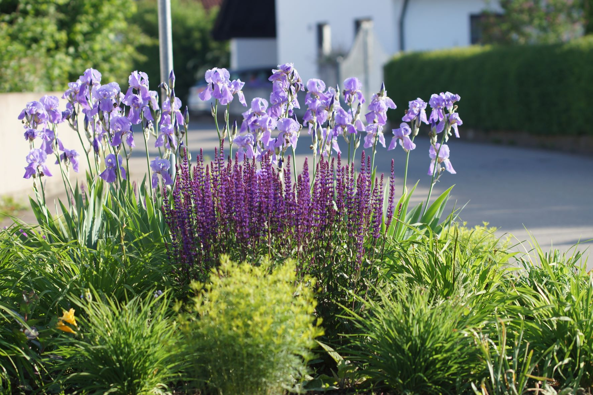
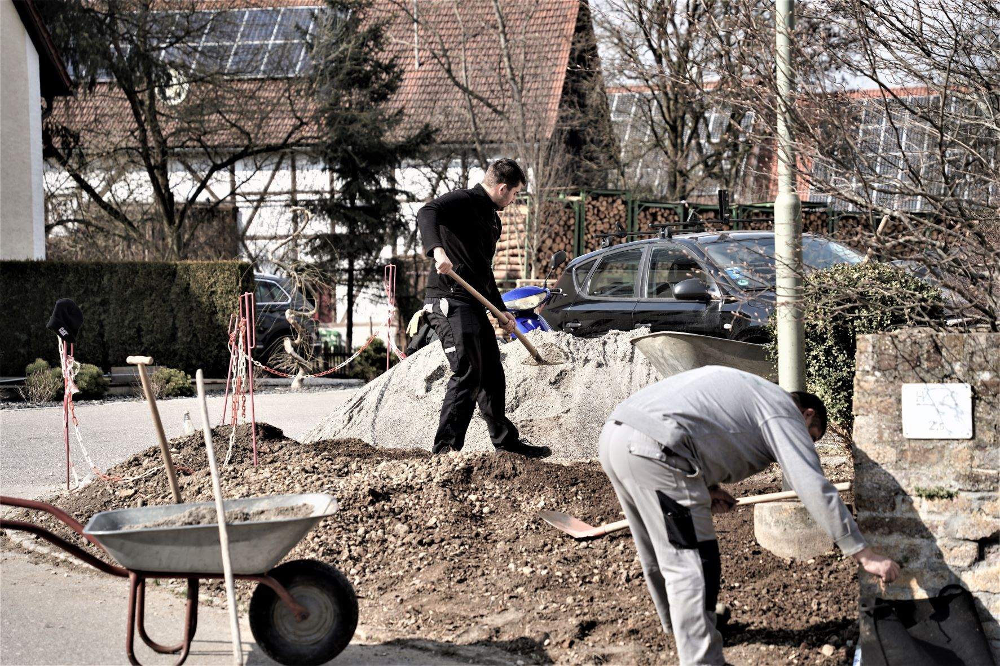

Mitgliederversammlung 2022
Totengedenken
Tagesordnung
- Eröffnung und Begrüßung
- Bericht des 1. Vorsitzenden
- Bericht des Schriftführers
- Bericht des Kassierers
- Nachwahl Kassenprüfer
- Entlastung des Kassierers und der Vorstandschaft
- Ehrungen
Letzte Versammlung - 16.09.2020
Spende Blumenschmuck
Schießen: 250 €
Schleebuch: 100 €

Pflege Streuobstwiesen
Ingstetten und Schießen
Pflege
Baumpaten
Moscht für Weihnachtsmarkt
Sortenkatierung
Gelbes Band - www.mundraub.org
Online Baumschnittkurs - 2021 und 2022
Pflege Rabatten
Dorfkreuz
Dorfkreuz

Kircheneingang

Kirchenmauer
Dorfplatz Schleebuch
Dorfplatz Schleebuch
Dorfplatz Schleebuch
Dorfplatz Schleebuch
Rabatte Kirche


Samenpakete für Kinder
Frühjar 2021


Gartenspaziergang 15.07.21
Fortbildung Gartenpfleger
Seminar „Öffentliche Grünflächen vielfältig gestalten“
Neue Mitgliederverwaltung des OGV Landesverband
Gemeinde Archiv in Schießen
Winterlinde beim Wegkreuz
Zusammenarbeit von 3 Vereinen
Versetzung des Wegkreuz
zur neuen Wasserversorgung
Pflanzen zweier Linden
von OGV Biberach und Schießen
90 Jahre - 90 Bäume
Gutscheine: 25 € OGV - 10 € Gemeinde

Gutscheine für 80 Bäume wurden verteilt
8 Bäume wurden vom OGV gepflanzt
Bericht in Querbeet im Bayrischen Fernsehen
Kreissieger beim VIELFALTSMACHER - Wettbewerb
Planung 2022
- Kräuterwanderung 29.05.2022
- Gartenbegehung in Schießen 23.06.2022
- Tag der offenen Gartentür 26.06.2022
- Kreisverband: Kurse im Kreismustergarten
"Blühende Landschaft durch artenteiche Wildblumenwiesen"
Kostenloses Saatgut
Gartenzertifizierung "Naturgarten - Bayern blüht"
Kreisverband/Landesverband
https://www.vielfaltsmacher.de
https://www.garten-klima.de
Gärtnerwissen